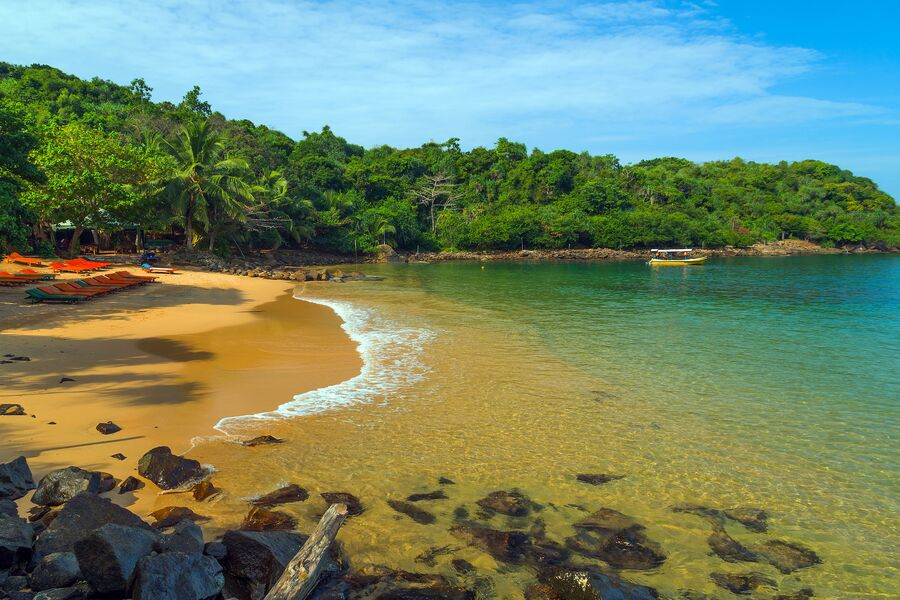

Galle is a city on the southwest coast of Sri Lanka.it's about 140km away from colombo. It’s known for Galle Fort, the fortified old city founded by Portuguese colonists in the 16th century. Stone sea walls, expanded by the Dutch, encircle car-free streets with architecture reflecting Portuguese, Dutch and British rule. Notable buildings include the 18th-century Dutch Reformed Church.
Galle

This Hidden lovely beach is few kilomitrs away from Unawatuna Beach. Its Located near to small forest and you have to walk to this hidden Beach. Its less Crowded and so senic. Sunset is amazing. There is parking facilities and better to come back from forest after 6.30 PM
Hikkaduwa Beach is one of the most popular beaches in Sri Lanka. It is a beach that attracts not only Sri Lankans but also foreigners. Coral reefs are one of the main attractions of this beach.The Narigama Beach is the most popular beach in Hikkaduwa and sees the maximum influx of tourists. The Narigama beach stretches on for about 4 kilometers and is a perfect surfing spot during the months from April to October. The sea water is calmer during the winters
Ambalangoda is a coastal town located in Galle District, Southern Province of Sri Lanka. the town is famous for its ancient demon masks and devil dancers. Situated approximately 107 kilometres (66 mi) south of Colombo, it sits on an elevation of 13 metres (43 ft) above the sea level
Stilt fishing is a method of fishing unique to the island country of Sri Lanka, known as “the Pearl of the Indian Ocean”. The fishermen sit on a cross bar called a ‘petta’ tied to a vertical pole and driven into the sand a few meters offshore. From this high position, the fishermen casts his line, and waits until a fish comes along to be caught. Although the approach looks primitive and ancient,
Galle Fort in the Bay of Galle on the southwest coast of Sri Lanka, was built first in 1588 by the Portuguese, then extensively fortified by the Dutch during the 17th century from 1649 onwards. It is a historical, archaeological and architectural heritage monument, which even after more than 432 years maintains a polished appearance, due to extensive reconstruction work done by Archaeological Department of Sri Lanka
Mirissa is a small town on the south coast of Sri Lanka, located in the Matara District of the Southern Province. It is approximately 150 kilometres (93 mi) south of Colombo and is situated at an elevation of 4 metres (13 ft) above sea level. Mirissa's beach and nightlife make it a popular tourist destination. It is also a fishing port and one of the island's main whale and dolphin watching locations